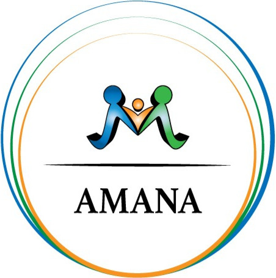

AMANA — Cours d'arabe
Leçons
Niveau 1 — Les lettres (formes isolées)
Adultes
Cours (10)
- 1ا ب ت ث alif · bâ’ · tâ’ · thâ’
- 2ج ح خ djîm · ḥâ’ · khâ’
- 3د ذ ر ز dâl · dhâl · râ’ · zây
- 4س ش sîn · chîn
- 5ص ض ṣâd · ḍâd
- 6ط ظ ṭâ’ · ẓâ’
- 7ع غ ʿayn · ghayn
- 8ف ق fâ’ · qâf
- 9ك ل م ن kâf · lâm · mîm · nûn
- 10ه و ي hâ’ · wâw · yâ’
Exercices (28)
Révisions (3)
- Révision 1 — cours 1 à 3
- Révision 2 — cours 4 à 6
- Révision 3 — cours 7 à 10
Évaluations (9)
- Évaluation diagnostique — niveau 1
- Évaluation 1 — niveau 1 (cours 1 à 3)
- Évaluation 2 — niveau 1 (cours 1 à 6)
- Évaluation 3 — niveau 1 (cours 1 à 10)
- Bilan du niveau 1 — version A
- Bilan du niveau 1 — version B
- Bilan du niveau 1 — version C
- Évaluation orale — niveau 1
- Fiche de suivi — niveau 1
Enfants
Cours (13)
- 1ا ب alif · bâ’
- 2ت ث tâ’ · thâ’
- 3ج ح خ djîm · ḥâ’ · khâ’
- 4د ذ dâl · dhâl
- 5ر ز râ’ · zây
- 6س ش sîn · chîn
- 7ص ض ṣâd · ḍâd
- 8ط ظ ṭâ’ · ẓâ’
- 9ع غ ʿayn · ghayn
- 10ف ق fâ’ · qâf
- 11ك ل kâf · lâm
- 12م ن mîm · nûn
- 13ه و ي hâ’ · wâw · yâ’
Exercices (28)
Révisions (3)
- Révision 1 — cours 1 à 4
- Révision 2 — cours 5 à 8
- Révision 3 — cours 9 à 13
Évaluations (9)
- Évaluation diagnostique — niveau 1
- Évaluation 1 — niveau 1 (cours 1 à 4)
- Évaluation 2 — niveau 1 (cours 1 à 8)
- Évaluation 3 — niveau 1 (cours 1 à 13)
- Bilan du niveau 1 — version A
- Bilan du niveau 1 — version B
- Bilan du niveau 1 — version C
- Évaluation orale — niveau 1
- Fiche de suivi — niveau 1
Niveau 2 — Formes liées, voyelles brèves et madd
Adultes
Cours (16)
- 1Liaison : ا د ذ ر ز و
- 2Formes : ب ت ث ن ي
- 3Formes : ج ح خ
- 4Formes : س ش
- 5Formes : ص ض
- 6Formes : ط ظ
- 7Formes : ع غ
- 8Formes : ف ق
- 9Formes : ك ل م ه
- 10Les voyelles brèves : fatḥa, ḍamma, kasra
- 11Le sukūn
- 12La shadda
- 13Le tanwīn
- 14Le madd avec l'alif
- 15Le madd avec و et ي
- 16Court ou long ? Synthèse
Exercices (28)
Révisions (2)
- Révision 1 — formes liées
- Révision 2 — voyelles brèves et signes
Évaluations (9)
- Évaluation diagnostique — niveau 2
- Évaluation 1 — niveau 2 : les formes
- Évaluation 2 — niveau 2 : voyelles brèves et signes
- Évaluation 3 — niveau 2 : voyelles longues
- Bilan du niveau 2 — version A
- Bilan du niveau 2 — version B
- Bilan du niveau 2 — version C
- Évaluation orale — niveau 2
- Fiche de suivi — niveau 2
Enfants
Cours (17)
- 1Liaison : ا د ذ ر ز و
- 2Formes : ب ت ث
- 3Formes : ن ي
- 4Formes : ج ح خ
- 5Formes : س ش
- 6Formes : ص ض
- 7Formes : ط ظ
- 8Formes : ع غ
- 9Formes : ف ق
- 10Formes : ك ل
- 11Formes : م ه
- 12Les petits signes : fatḥa, ḍamma, kasra
- 13Le petit rond : le sukūn
- 14La shadda et le tanwīn (découverte)
- 15Le madd avec l'alif
- 16Le madd avec و et ي
- 17Court ou long ? Synthèse
Exercices (28)
Révisions (2)
- Révision 1 — formes liées
- Révision 2 — voyelles brèves et signes
Évaluations (9)
- Évaluation diagnostique — niveau 2
- Évaluation 1 — niveau 2 : les formes
- Évaluation 2 — niveau 2 : voyelles brèves et signes
- Évaluation 3 — niveau 2 : voyelles longues
- Bilan du niveau 2 — version A
- Bilan du niveau 2 — version B
- Bilan du niveau 2 — version C
- Évaluation orale — niveau 2
- Fiche de suivi — niveau 2
Niveaux 3 à 5 — Grammaire (leçons actuelles)
Adultes
- 1Le défini et l'indéfini en arabeCoursExercices
- 2Le duel en arabeCoursExercices
- 3Le masculin et le féminin en arabeCoursExercices
- 4Les nombres cardinaux en arabeCoursExercices
- 5Règles des nombres en arabe - CoursCoursExercices
- 6Les nombres ordinaux en arabeCoursExercices
- 7Les fractions et l'heure en arabeCoursExercices
- 8Les adverbes en arabe - ظُرُوفCoursExercices
- 9Les prépositions en arabe - CoursCoursExercices
- 10Les formes du pluriel en arabeCoursExercices
- 11Les pronoms en arabeCoursExercices
- 12Le pronom relatif et la clause relative en arabeCoursExercices
- 13Le passé en arabe — الفِعْل الماضِيCoursExercices
- 14Le présent et le futur en arabe — الفِعْل المُضارِعCoursExercices
- 15L'impératif en arabe — فِعْل الأَمْرCoursExercices
- 16La négation en arabe — النَّفْيCoursExercices
- 17Les types de phrases en arabe — الجُمْلة العَرَبِيَّةCoursExercices
- 18Les phrases interrogatives en arabe — الاِسْتِفْهامCoursExercices
- 19Le vocatif en arabe — النِداءCoursExercices
- 20Le conditionnel en arabe — الجُمْلة الشَرْطِيّةCoursExercices
- 21L'annexion et l'adjectif en arabe — الإِضافة
والنَعْتCoursExercices
- 22Le subjonctif et l'apocopé en arabe — المُضارِع المَنْصُوب
والمُضارِع المَجْزُومCoursExercices
- 23Les conjonctions de coordination en arabe — حُرُوف
العَطْفCoursExercices
- 24Hamzat al-waṣl et hamzat al-qaṭʿCoursExercices
- 25La hamza (1) : les règles de baseCoursExercices
- 26La hamza (2) : les règles avancéesCoursExercices
- 27Le lām solaire et lunaireCoursExercices
- 28La rencontre de deux sukūnCoursExercices
Enfants
- 1Le défini et l'indéfini en arabeCoursExercices
- 2Le duel en arabeCoursExercices
- 3Le masculin et le féminin en arabeCoursExercices
- 4Les nombres cardinaux en arabeCoursExercices
- 5Règles des nombres en arabe - CoursCoursExercices
- 6Les nombres ordinaux en arabeCoursExercices
- 7Les fractions et l'heure en arabeCoursExercices
- 8Les adverbes en arabe - ظُرُوفCoursExercices
- 9Les prépositions en arabe - CoursCoursExercices
- 10Les formes du pluriel en arabeCoursExercices
- 11Les pronoms en arabeCoursExercices
- 12Le pronom relatif et la clause relative en arabeCoursExercices
- 13Le passé en arabe — الفِعْل الماضِيCoursExercices
- 14Le présent et le futur en arabe — الفِعْل المُضارِعCoursExercices
- 15L'impératif en arabe — فِعْل الأَمْرCoursExercices
- 16La négation en arabe — النَّفْيCoursExercices
- 17Les types de phrases en arabe — الجُمْلة العَرَبِيَّةCoursExercices
- 18Les phrases interrogatives en arabe — الاِسْتِفْهامCoursExercices
- 19Le vocatif en arabe — النِداءCoursExercices
- 20Le conditionnel en arabe — الجُمْلة الشَرْطِيّةCoursExercices
- 21L'annexion et l'adjectif en arabe — الإِضافة
والنَعْتCoursExercices
- 22Le subjonctif et l'apocopé en arabe — المُضارِع المَنْصُوب
والمُضارِع المَجْزُومCoursExercices
- 23Les conjonctions de coordination en arabe — حُرُوف
العَطْفCoursExercices
- 24Hamzat al-waṣl et hamzat al-qaṭʿCoursExercices
- 25La hamza (1) : les règles de baseCoursExercices
- 26La hamza (2) : les règles avancéesCoursExercices
- 27Le lām solaire et lunaireCoursExercices
- 28La rencontre de deux sukūnCoursExercices
Niveau 4-2 — Schèmes et verbes irréguliers (en cours)
Adultes
Cours (19)
- 29Du verbe sain à la racine et au schème
- 30La forme I du verbe sain
- 31La voix passive du verbe sain
- 32Le verbe hamzé
- 33Le verbe redoublé
- 34Le verbe assimilé
- 35Le verbe creux (1) : le passé et le présent
- 36Le verbe creux (2) : apocopé, impératif, passif, participes
- 37Le verbe défectueux (1) : le passé et le présent
- 38Le verbe défectueux (2) : modes, impératif, passif, participes, maṣdar
- 39Le verbe lafīf et trois verbes très fréquents : voir, venir, apporter
- 40Kāna et ses sœurs ; bilan des verbes irréguliers
- 41Les dix formes du verbe : vue d'ensemble et forme II
- 42La forme III : فَاعَلَ
- 43La forme IV
- 44Les formes V et VI
- 45Les formes VII et VIII
- 46Les formes IX et X
- 47Passif, participes et maṣdar des formes augmentées ; de la racine à la famille de mots
Exercices (19)
- 29Du verbe sain à la racine et au schème
- 30La forme I du verbe sain
- 31La voix passive du verbe sain
- 32Le verbe hamzé
- 33Le verbe redoublé
- 34Le verbe assimilé
- 35Le verbe creux (1) : le passé et le présent
- 36Le verbe creux (2) : apocopé, impératif, passif, participes
- 37Le verbe défectueux (1) : le passé et le présent
- 38Le verbe défectueux (2) : modes, impératif, passif, participes, maṣdar
- 39Le verbe lafīf et trois verbes très fréquents : voir, venir, apporter
- 40Kāna et ses sœurs ; bilan des verbes irréguliers
- 41Les dix formes du verbe : vue d'ensemble et forme II
- 42La forme III : فَاعَلَ
- 43La forme IV
- 44Les formes V et VI
- 45Les formes VII et VIII
- 46Les formes IX et X
- 47Passif, participes et maṣdar des formes augmentées ; de la racine à la famille de mots
Corrigés (19)
- 29Du verbe sain à la racine et au schème
- 30La forme I du verbe sain
- 31La voix passive du verbe sain
- 32Le verbe hamzé
- 33Le verbe redoublé
- 34Le verbe assimilé
- 35Le verbe creux (1) : le passé et le présent
- 36Le verbe creux (2) : apocopé, impératif, passif, participes
- 37Le verbe défectueux (1) : le passé et le présent
- 38Le verbe défectueux (2) : modes, impératif, passif, participes, maṣdar
- 39Le verbe lafīf et trois verbes très fréquents : voir, venir, apporter
- 40Kāna et ses sœurs ; bilan des verbes irréguliers
- 41Les dix formes du verbe : vue d'ensemble et forme II
- 42La forme III : فَاعَلَ
- 43La forme IV
- 44Les formes V et VI
- 45Les formes VII et VIII
- 46Les formes IX et X
- 47Passif, participes et maṣdar des formes augmentées ; de la racine à la famille de mots